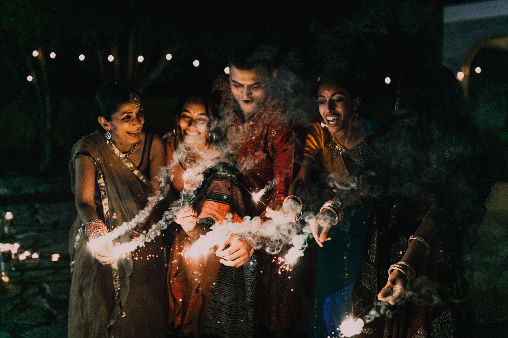
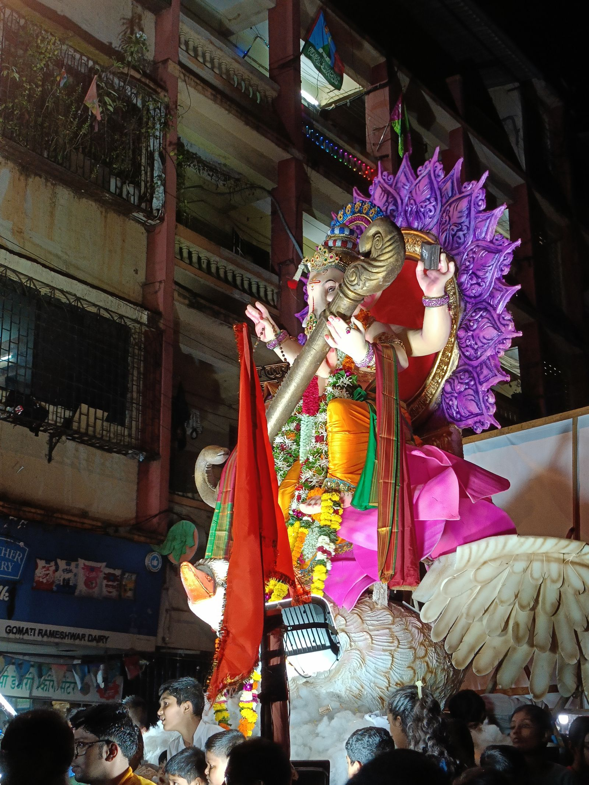
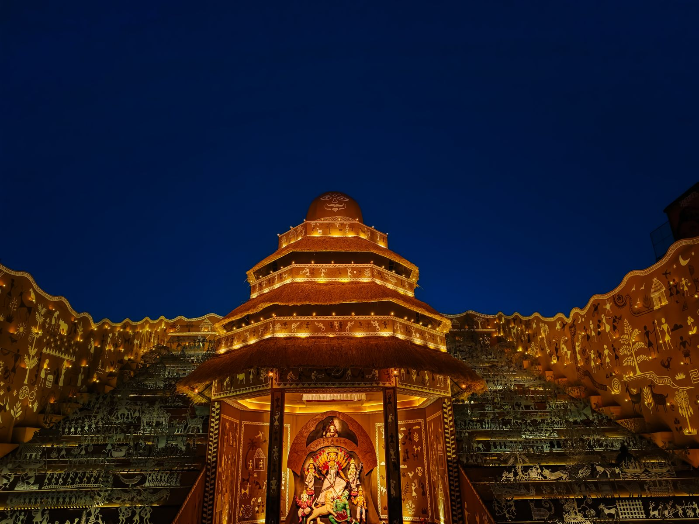
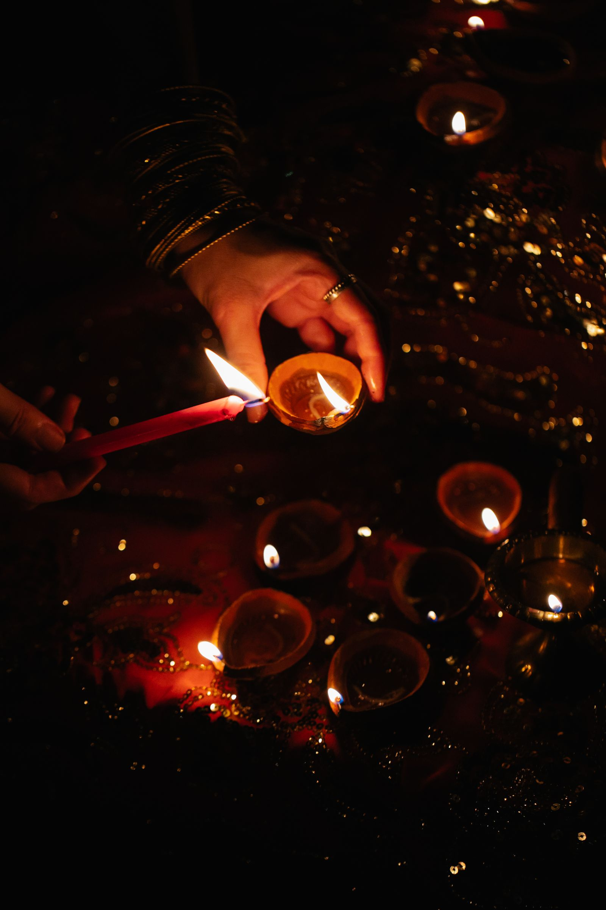

Room 00 — The Entrance
SEASON NOW HANGING: THE FESTIVAL OF LIGHTSDiwali
Festivals are lit once a year. The film has to be ready before the lamps are.

Opening frame — the season the gallery is hung for: Diwali, Pune, October 2025. REFERENCE PHOTOGRAPH — A DIWALI NIGHT CROWD WITH SPARKLERS
PEXELS · RDNE STOCK PROJECT · CREDITS IN CREDITS.MD
Room 01 — After Dark
Night Processions
The festival at full volume: immersion nights, pandals at 2 a.m., markets after dark. These frames travel the way the street travels — with the crowd, in one direction, no cutting across.

The Immersion Night — Ganesh Visarjan · Mumbai · 6 Sep 2025 · Procession film, 12 minREFERENCE PHOTOGRAPH
PEXELS · NILESH RY

The Pandal at 2 a.m. — Durga Puja · Kolkata · 1 Oct 2025 · Organiser aftermovieREFERENCE PHOTOGRAPH
PEXELS · MONOJIT DUTTA
A Thousand Small Fires — Diwali · Pune · 20 Oct 2025 · Highlight film, 4 minREFERENCE PHOTOGRAPH
PEXELS · KRISHA PATEL
The Market After Dark — Christmas market · Bengaluru · 21 Dec 2024 · Highlight film, 3 minREFERENCE PHOTOGRAPH
PEXELS · JÁNOS CSATLÓS

Into the Water — Ganesh Visarjan · Mumbai · 6 Sep 2025 · the procession film's last frameREFERENCE PHOTOGRAPH
PEXELS · VINAY MAYEKAR
Room 02 — First Light
Dawn Rituals
Same camera, twelve hours later. The dawn festivals ask for the opposite discipline: arrive before the light, speak quietly, and let the ritual set the pace. These frames travel back the other way — the walk home.
Room 03 — The Case Files
Three Films
Hung at full size, with the paperwork attached: what the organiser asked for, the decisions the festival forced, and what was actually delivered — including the stretch of one procession this camera was not allowed to film.

Lit Once — Diwali · Pune · 18–20 Oct 2025 · delivered 28 Oct 2025, inside the window. What the camera could not do in the aarti crowd, told plainly. Read the case file →REFERENCE PHOTOGRAPH
PEXELS · LARA JAMESON

The Stretch We Did Not Film — Ganesh Visarjan · Pune · 6 Sep 2025 · a no-film zone honoured, and the gap named inside the film itself. Read the case file →REFERENCE PHOTOGRAPH
PEXELS · NILESH RY

Five Nights, One Morning — Durga Puja · Kolkata · 28 Sep–2 Oct 2025 · the planner said 18 Oct; it landed 15 Oct. Read the case file →REFERENCE PHOTOGRAPH
PEXELS · DIBAKAR ROY
“The aftermovie reached our sponsor meeting with three days to spare — and it showed the puja the way the neighbourhood remembers it, crowds and all. Anya's dates are the reason we signed her before the pandal was even designed.”
Behind the Office Door
The Paperwork
The gallery is the work. This is how the work is run: the printed tables the practice dates every booking by, the planner that turns a festival date into a delivery date, the services register, and what it costs. Nothing here is estimated from memory — the tools below read these tables.
The printed tables
| Raw footage per camera-day | One camera, one operator, one festival day (up to 10 hours on site) | 3.5 h |
|---|
| Highlight film | Cut for rewatching — the festival in 3–5 minutes | 2.2 |
|---|---|---|
| Procession film | Route order preserved — the festival in 8–15 minutes | 1.6 |
| Organiser aftermovie | Committee cut — sponsors, speeches, credits, archive grade | 3.2 |
| Suite day | One editor, one suite, doors closed | 8 h |
| Ingest & logging | Cards copied, backed up twice, every hour of footage logged | +1 day |
|---|---|---|
| Finishing | Grade, master, review copy, captions | +1 day |
| The booking window | Delivery must land within 21 days of the festival's first day — the date organisers open next year's bookings and sponsor talks. After that, an aftermovie is archaeology. | 21 days |
The Edit & Delivery Planner
Set the shape of the job. The dates are computed line by line from Tables C1, E1 and P1 — the same arithmetic every booking on this site was dated by. Worked example pre-loaded: a two-camera, two-day highlight film.
The services register
Fees — Table F1
| Camera-day, first camera | Operator, camera, sound kit, cards, insurance | ₹18,000 |
|---|---|---|
| Camera-day, each additional camera | A second operator is a second angle on everything | ₹11,000 |
| Edit & finish — Highlight film | Flat, per Table E1 ratios | ₹24,000 |
| Edit & finish — Procession film | Flat | ₹30,000 |
| Edit & finish — Organiser aftermovie | Flat, incl. committee review round | ₹42,000 |
| Rush finish | Delivery inside 7 days of the last filming day | +25% of edit fee |
| Travel outside Pune | At cost, agreed in writing before booking — never discovered after | at cost |
What moves the price: camera count first, delivery speed second. A second camera doubles the angles and the footage; a rush finish buys extra suite days. Nothing else is hiding in the fee — no per-minute charges, no “festival surcharge”, no charge for the recce.
The Booking Estimator
Table F1, added up in the open. Travel outside Pune is not in this estimator — it is quoted per booking, at cost, before you commit.
A booking is held with a 40% deposit against these figures. If a festival is cancelled by weather, filmed days are billed and the edit fee is waived — see the terms on the About page.
The next festival is
already on the calendar.
The autumn season books out by August, and visarjan dates go first. Bring the festival's dates; the planner above will tell us both, honestly, whether the film can land in time.